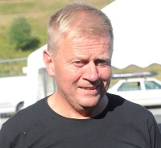

Karen Margrethe Arntsdatter Strøm
K, #5027, f. 14 april 1805
Foreldre
Biografi
Karen Margrethe Arntsdatter Strøm ble født den 14 april 1805 på/i Fosnes, Nord-Trøndelag. Hun giftet seg med
Halvor Ingebrigtsen Flått den 17 oktober 1830.
| Sist redigert |
5 mai 2005 00:00:00 |
Anna Sofie Benjaminsdatter Sagmo
K, #5028, f. 25 september 1847, d. 31 mai 1909
Foreldre
| Sønn | Nels Jorgen Brevig (f. 10 februar 1869, d. 17 mars 1943) |
| Sønn | Oluf Leonard Brevig+ (f. 19 mai 1871, d. 11 desember 1920) |
| Sønn | Samuel Bernhof Brevig+ (f. 6 oktober 1874, d. 19 desember 1937) |
| Datter | Julie Petra Brevig+ (f. 19 april 1876, d. 18 februar 1951) |
| Datter | Anna Christine Brevig (f. 13 august 1877, d. 16 august 1886) |
| Datter | Selma Louise Brevig (f. 6 juli 1879, d. 12 august 1886) |
| Sønn | Otto Brevig (f. 1 februar 1882, d. 13 november 1882) |
| Datter | Emma Ovidia Brevig (f. 25 august 1883, d. 6 august 1886) |
| Datter | Hannah Marie Brevig (f. 26 oktober 1885, d. 16 februar 1903) |
| Datter | Anna Christine Brevig+ (f. 5 januar 1888, d. 12 oktober 1964) |
Biografi
Anna Sofie Benjaminsdatter Sagmo ble født den 25 september 1847 på/i Bjøråen; Foldereid, Nærøy, Nord-Trøndelag. Hun giftet seg med
Paul Christian Petersen Brevig den 17 juni 1867. Hun døde den 31 mai 1909 på/i Sacred Heart, Renville County, Minnesota, USA. Hun ble gravlagt på/i Vestre Sogn Lutheran Cemetery, Sacred Heart, Renville County, Minnesota, USA.
Anna Sofie Benjaminsdatter Sagmo was also known as Anna Sophia Bjoraa. Hun was also known as Anna Sophia Bjoraa Brevig. Hun emigrerte til Rochester, Olmsted County, Minnesota, USA, i mai 1867 sammen med
Paul Christian Petersen Brevig.
| Sist redigert |
7 juli 2025 00:07:11 |
| Slektskap | 5-menning 4 ganger forskjøvet til Håkon Wahl |
Sofie Bertilsdatter Fiskum
K, #5029, f. 10 november 1823, d. 13 september 1905
Foreldre
Biografi
Sofie Bertilsdatter Fiskum ble født den 10 november 1823 på/i Harran, Grong, Nord-Trøndelag. Hun giftet seg med
Benjamin Nilsen den 27 april 1845. Hun døde den 13 september 1905 på/i Minnesota, USA.
Sofie Bertilsdatter Fiskum was also known as Sophia Bjoraa. Hun emigrerte til Rochester, Olmsted County, Minnesota, USA, den 22 mai 1867 sammen med
Benjamin Nilsen. Hun bodde i 1900 på/i Hawk Creek, Renville County, Minnesota, USA.
| Sist redigert |
7 mars 2025 10:59:19 |
Benjamin Nilsen
M, #5030, f. 14 mars 1816, d. 26 mars 1900
Foreldre
Biografi
Benjamin Nilsen ble født den 14 mars 1816 på/i Foldereid, Nærøy, Nord-Trøndelag. Han giftet seg med
Sofie Bertilsdatter Fiskum den 27 april 1845. Han døde den 26 mars 1900 på/i Hawk Creek, Renville County, Minnesota, USA.
Benjamin Nilsen was also known as Benjamin Bjoraa. Han ble døpt den 21 april 1816 på/i Foldereid kirke, Nærøy, Nord-Trøndelag. Han ble konfirmert den 7 august 1831 på/i Foldereid kirke, Nærøy, Nord-Trøndelag. Han bodde på/i Sagmo, Foldereid, Nærøy, Nord-Trøndelag. Han emigrerte til Rochester, Olmsted County, Minnesota, USA, den 22 mai 1867 sammen med
Sofie Bertilsdatter Fiskum. Han bodde i 1885 på/i Bandon, Renville County, Minnesota, USA. Han bodde i 1895 på/i Hawk Creek, Renville County, Minnesota, USA.
| Sist redigert |
7 juli 2025 00:07:11 |
| Slektskap | 4-menning 5 ganger forskjøvet til Håkon Wahl |
Berit Jakobsdatter Svorkås
K, #5031, f. 1840
Foreldre
Biografi
Berit Jakobsdatter Svorkås ble født i 1840 på/i Orkdal, Sør-Trøndelag. Hun giftet seg med
Paul Ingebrigtson Metliflott den 28 november 1864 på/i Orkdal kirke, Orkdal, Sør-Trøndelag.
Berit Jakobsdatter Svorkås had reference number 31419.
| Sist redigert |
24 mai 2003 00:00:00 |
Ingebrigt Paulson
M, #5032, f. 31 juli 1865
Foreldre
Biografi
Ingebrigt Paulson ble født den 31 juli 1865.
Ingebrigt Paulson had reference number 31420. Han ble døpt den 27 august 1865 på/i Orkdal kirke, Orkdal, Sør-Trøndelag. Han ble konfirmert den 12 september 1880 på/i Orkdal kirke, Orkdal, Sør-Trøndelag. Han immigrerte til USA.
| Sist redigert |
20 august 2022 20:28:43 |
| Slektskap | 3-menning 2 ganger forskjøvet til Lovise Julie Eggan |
John Paulson
M, #5033, f. 11 september 1869
Foreldre
Biografi
John Paulson ble født den 11 september 1869.
John Paulson had reference number 31421. Han ble døpt den 11 oktober 1869 på/i Orkdal kirke, Orkdal, Sør-Trøndelag. Han immigrerte til USA.
| Sist redigert |
20 august 2022 20:28:43 |
| Slektskap | 3-menning 2 ganger forskjøvet til Lovise Julie Eggan |
Erik Olsen Ofstad
M, #5034
Biografi
Erik Olsen Ofstad had reference number 31422.
| Sist redigert |
14 mai 2011 00:00:00 |
Marit Eriksdatter
K, #5035, f. 13 november 1873
Foreldre
Biografi
Marit Eriksdatter ble født den 13 november 1873 på/i Orkdal, Sør-Trøndelag. Hun giftet seg med
Monseth.
Marit Eriksdatter had reference number uægte. Hun ble døpt den 7 desember 1873 på/i Orkdal, Sør-Trøndelag. Hun ble konfirmert den 7 oktober 1888 på/i Orkdal, Sør-Trøndelag. Hun immigrerte til USA i 1893.
| Sist redigert |
20 august 2022 20:28:43 |
| Slektskap | 3-menning 2 ganger forskjøvet til Lovise Julie Eggan |
Monseth
M, #5036
Biografi
Monseth had reference number 31424.
| Sist redigert |
24 mai 2003 00:00:00 |
Fridtjof Monseth
M, #5037
Foreldre
Biografi
Fridtjof Monseth døde på/i USA.
Fridtjof Monseth had reference number 31425.
| Sist redigert |
7 november 2011 00:00:00 |
| Slektskap | 4-menning 1 gang forskjøvet til Lovise Julie Eggan |
Paul Andersen Rømme
M, #5038
Biografi
Paul Andersen Rømme giftet seg med
Ane Olsdatter Nervik den 12 juli 1825 på/i Orkdal kirke, Orkdal, Sør-Trøndelag.
Paul Andersen Rømme had reference number 31426.
| Sist redigert |
24 mai 2003 00:00:00 |
Leif Sigmund Bach
M, #5039, f. 30 juli 1933, d. 15 september 2005
Foreldre
Familie: Hildur Petra Haug
| Sønn | Tor Halgeir Bach+ (f. 27 april 1963, d. 11 juni 2016) |
| Datter | Lisa Karin Bach+ (f. 19 juli 1964, d. 7 august 2023) |
| Datter | Tove Pernille Bach+ |
| Sønn | Roar Bach+ |
| Datter | Hanne Bach (f. 20 april 1971, d. 18 september 1971) |
Biografi
Leif Sigmund Bach ble født den 30 juli 1933 på/i Gravvik, Nærøy, Nord-Trøndelag. Han giftet seg med Hildur Petra Haug. Han døde den 15 september 2005. Han ble gravlagt den 23 september 2005 på/i Kolvereid kirkegård, Nærøy, Nord-Trøndelag.
Leif Sigmund Bach had reference number 31601.
| Sist redigert |
21 februar 2019 00:00:00 |
| Slektskap | 6-menning til Håkon Wahl
7-menning til Lovise Julie Eggan |
Tor Halgeir Bach
M, #5040, f. 27 april 1963, d. 11 juni 2016
Foreldre
Familie: Elisabeth Bye
| Sønn | Ole Marius Bach+ |
| Datter | Kjersti Bach |
| Datter | Karen Bach |

Tor Halgeir Bach
Biografi
Tor Halgeir Bach ble født den 27 april 1963 på/i Kolvereid, Nærøy, Nord-Trøndelag. Han giftet seg med Elisabeth Bye. Han døde under Steinfjellstafetten (Namsskogan - Røyrvik) den 11 juni 2016.
Tor Halgeir Bach had reference number 31602. Han deltok i orientering, friidrett og langrenn fram til seniornivå. Han kjøpte i 1999 Kveinnbakken 58/73, Skaga; Kolvereid, Nærøy, Nord-Trøndelag, av Ståle og Lisa Kvisterø (søster av Tor) for 5.000 kroner. Han flyttet til Straumen, Inderøy, Nord-Trøndelag. Han bodde på/i Inderøy, Nord-Trøndelag. Han ble bisatt den 24 juni 2016 Sakshaug kirke, Inderøy, Nord-Trøndelag.
| Sist redigert |
4 august 2022 21:01:47 |
| Slektskap | 5-menning til Håkon Wahl
7-menning 1 gang forskjøvet til Lovise Julie Eggan |
Lisa Karin Bach
K, #5041, f. 19 juli 1964, d. 7 august 2023
Foreldre
Familie: Ståle Kvisterø (f. 4 februar 1957, d. 21 januar 2009)
| Datter | Kaia Kvisterø+ |
| Sønn | Mats Kvisterø |
| Datter | Julie Bach Kvisterø |
Biografi
Lisa Karin Bach ble født den 19 juli 1964 på/i Kolvereid, Nærøy, Nord-Trøndelag. Hun giftet seg med
Ståle Kvisterø. Hun døde den 7 august 2023. Hun ble gravlagt den 17 august 2023 på/i Kolvereid kirkegård, Nærøysund, Trøndelag.
Lisa Karin Bach was also known as Lisa Karin Bach Kvisterø. Hun had reference number 31603.
| Sist redigert |
11 august 2023 22:24:52 |
| Slektskap | 5-menning til Håkon Wahl
7-menning 1 gang forskjøvet til Lovise Julie Eggan |
Ståle Kvisterø
M, #5048, f. 4 februar 1957, d. 21 januar 2009
Foreldre
Familie 1: Marita Riise
| Sønn | Dan Vegard Kvisterø Riise |
Familie 2: Lisa Karin Bach (f. 19 juli 1964, d. 7 august 2023)
| Datter | Kaia Kvisterø+ |
| Sønn | Mats Kvisterø |
| Datter | Julie Bach Kvisterø |
Biografi
Ståle Kvisterø ble født den 4 februar 1957 på/i Kolvereid, Nærøy, Nord-Trøndelag. Han giftet seg med
Lisa Karin Bach. Han døde den 21 januar 2009 på/i Skaga; Kolvereid, Nærøy, Nord-Trøndelag. Ståle valgte selv denne løsningen. Han ble gravlagt den 3 februar 2009 på/i Kolvereid kirke, Nærøy, Nord-Trøndelag.
Ståle Kvisterø had reference number 31610.
| Sist redigert |
16 juli 2022 15:58:02 |
| Slektskap | 7-menning til Håkon Wahl |
{kind=link}